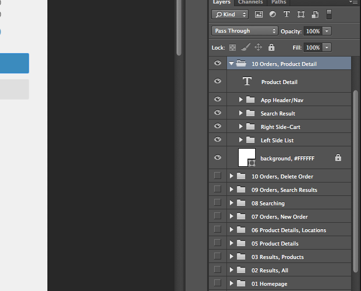
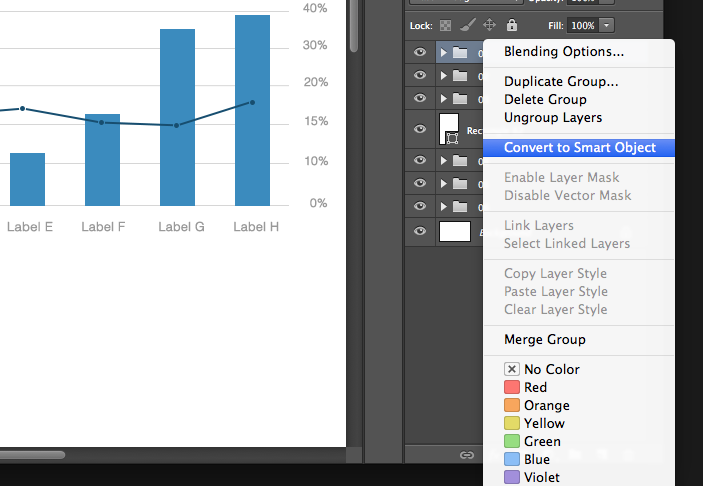

Design Process
Working with Photoshop
Naming Layers
Arguably the biggest source of angst amongst PSD inheritors, messy and unnamed layers suck the fun out of
any situation. If you do nothing else, name your layers!
WHY? The quintessential piece of etiquette: naming your layers instantly decreases confusion and improves
acclimation to an otherwise unfamiliar document.
Don't be selfish, give your layers proper names! It makes life a lot easier for the next person who has to
work on your designs, and you'll look amazing if the file gets sent off to a client. A good technique is
to give each layer a name as they're created, which is much easier than trying to do them all at once later on.

Making Use of Folders
Grouping layers makes it easy to show/hide various areas quickly.
WHY? Happy layers have happy homes. Folders group like-items for easier navigation and editing.
Delete your Empty Layers
Are you a layer hoarder? It's OK to get rid of all the unused layers from your PSD.
WHY? Having too many layers hanging around usually results in an unnecessary bloat of file size and
can affect performance.
Globalize Common Elements
No reason to have 5 copies of the logo for different layouts. Globalize it on a master layer.
WHY? If you use an element (logo, photo, etc.) in multiple layouts within the PSD, only having to edit it
in one place makes a lot of sense.
Smart Objects in Photoshop
Creating Smart Objects
Smart Objects can be created in a number of ways, and typically, the type of Smart Object you create
depends heavily on how and where you create them. For instance, you can create Linked Smart Objects
(Photoshop CC 14.2) or Embedded Smart Objects. Smart Objects can be created from the Layers panel by
right clicking on them, or you can create them by simply dragging and dropping items onto your canvas.

Shared Source
If you duplicate a Smart Object the usual way in a Photoshop document, the same embedded or linked
source file will be used for both instances. That means you can duplicate a Smart Object several times and
you can update them all by just changing their shared source file.
The Best Tricks to Reduce Photoshop File Size
-
Put a Solid Color Layer on Top
This is the craziest and most highly effective trick I've come across, and I found it entirely by accident.
I recently downloaded a pack of large PSDs only to find that when I looked at them in Finder, they appeared
to be blank. However, when I opened them up in Photoshop, all the promised layers were present,
there was simply a solid white layer on top. Why on earth would someone do this?
As I experimented with the files, I quickly found the answer. It turns out, deleting that layer made the file
size increase substantially! Photoshop's high quality file previews are surprisingly weighty, so simplifying
them as much as possible saves you tons of space on huge files.
Obviously, the downside here is that you lose the nice file previews in applications like Finder and Bridge.
If you need a no-brainer, quick way to cut down a PSD before you upload it though, it's a great trick.
Tip: Instead of adding a layer on top, you could simply hide all the layers. This can get tricky
though if you have a complex PSD where some layers should be hidden while others should be showing.
-
Only Keep the Essential
I know this one sounds kind of obvious, but it's easy to forget some of the junk that accrues as you
create your document. Hidden layers used to trace a design? Delete them. A layer for your color
palette? Delete it. Notes and measurements? Delete them. When going through, ask yourself, "Does the
recipient of the file need to see this?" If the answer is no, then delete it.
- Merge/Flatten Layers
The idea here is simple. A PSD with 100 layers is much larger than a PSD with ten layers. Be careful
though, flattening layers is destructive and greatly reduces your ability to make changes to your
file. Only flatten the PSD that you're sending to a client, printer, etc., and only flatten layers
that will never need to be edited by the person receiving the file.
Sometimes, flattening is actually a good precaution before sharing your files. There are tons of
cases where you don't want the person who receives the file to be able to change certain aspects,
and flattening any critical layers is the best way to ensure that making changes is more work than they
care to tackle.
-
Applying Layer Masks
Layer masks are a complex tool that eat up plenty of 1s and 0s. They're essentially extra layers that
can hide in plain sight. Right-click on a mask, then apply it and you'll reduce your file size.